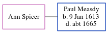

Ann Spicer, the wife of Paul Measdy (the 9 times great-grandfather of Nigel Horne), and married Paul at St John, Ickham, Kent, England on Jul 14, 16641 (St. Johns).
Citations
Kent Marriages And Banns - Findmypast
Family Tree

Generated by ged2site. Last updated on Jun 11, 2024